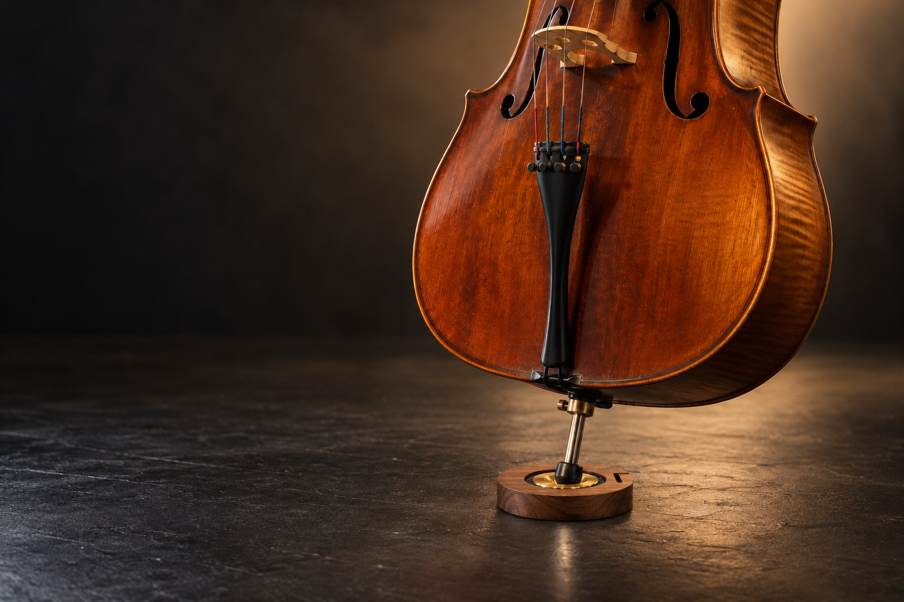

黃銅｜承接
以金屬的密實質地與重量，建立穩定的結構基礎。

三種材料，各有其性格；真正的設計，在於它們如何共同作用。SLAVA 01 以三層複合結構整理每一處接觸與每一層結構。
我們不以單純增加重量為目標，也不預設振動傳遞越多，聲音就越好；我們關注的是結構如何共同影響樂器與支撐環境之間的互動。
黃銅 / 碳纖維 / 楓木以金屬的密實質地與重量，建立穩定的結構基礎。
運用複合材料的剛性特性，構成連結上下層的結構介面。
以天然木材的紋理、方向性與振動特性，注入弦樂器的材料美學。
材料配置用於探索支撐、剛性與傳遞的平衡；聲學表現仍以實際琴上 A/B 測試為準。
SLAVA 01 關注的不只是止滑，而是大提琴尾端、三層複合結構與支撐環境如何共同作用。產品透過材料配置探索穩定性、剛性與振動傳遞的平衡，不預設單一因素越多就越好。


實際琴身、尾針與地面接觸的研究視角
從尾端支點與地面的接觸開始，降低不必要的側向位移，建立可重複的支撐條件。
碳纖維介面連結黃銅與楓木，使上下層在有限厚度中形成清楚而穩定的結構關係。
設計重點不是追求傳遞越多越好，而是觀察每一層材料如何共同影響樂器與支撐環境的互動。
兩款原型，以不同尺寸與使用情境，對應你的練習需求。
長形配置延伸支撐範圍，以黃銅承接、碳纖維連結、楓木調和，構成完整的三層材料系統。
圓形配置將接觸與結構集中於同一中心，保留相同的黃銅、碳纖維與楓木複合邏輯。
開啟聲音，讓介面進入一段低頻、微光與星塵組成的練習空間。這不是背景音樂，是一個讓你慢下來的入口。
不是裝飾，是聲音工具的結構語言。

保留溫度、重量與手上會記住的紋理。

讓視覺中心成為聲音感受的中心。

帶走的不只是器材，是每一次練習的儀式感。
先選擇款式加入購物車，稍後可以在購物袋裡調整數量、登入會員或建立訂單。
目前網站採用測試售價：LONG NT$5,000、ROUND NT$2,500。正式募資前會依材料、聲學測試、包裝與物流重新核算。
帳戶、購物車與訂單流程先以可操作的前端體驗呈現，方便確認品牌與購買流程；正式上線時再接會員、金流與訂單資料庫。
完成琴上實測、成本與交期確認後，會優先通知留下意願的學生、老師與演奏者。